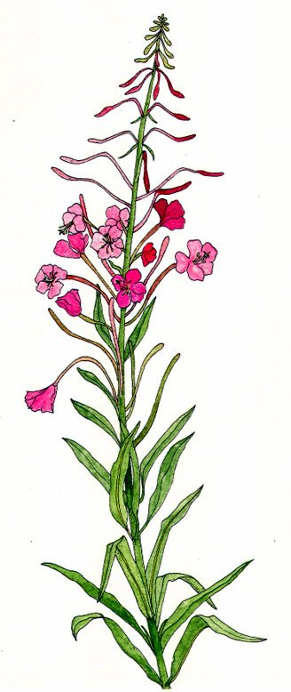

Cinq feuilles
dopant (infusion) - 30 po
↪ plante - plaine - été
↪ plante - plaine - été
 Cette plante aux feuilles roses à cinq pétales fleurs est beaucoup plus rare que le callin car elle est dévorée par de nombreux insectes de tous types, mais ses effets sont bien plus puissants. L'infusion de cinq feuilles est en fait un puissant aphrodisiaque qui augmente l'attirance sexuelle et le charisme.
Cette plante aux feuilles roses à cinq pétales fleurs est beaucoup plus rare que le callin car elle est dévorée par de nombreux insectes de tous types, mais ses effets sont bien plus puissants. L'infusion de cinq feuilles est en fait un puissant aphrodisiaque qui augmente l'attirance sexuelle et le charisme.
L'infusion de cinq feuilles donne un avantage aux jets de Charisme pour les 10 minutes qui suivent si le jet sert d'une certaine manière à séduire une personne que votre espèce et votre sexe peut attirer normalement. Dans le cas contraire, les personnes en face de vous ne perçoivent aucune différence. Si une personne a été séduite, elle ne change pas d'avis passées les 10 minutes car elle n'est pas charmée magiquement. Le séducteur doit par contre entretenir son effet de par lui-même.

Illustration reproduite avec l'aimable autorisation de Christine Achard
Illustration reproduite avec l'aimable autorisation de Christine Achard
Recueil des plantes d´AideDD